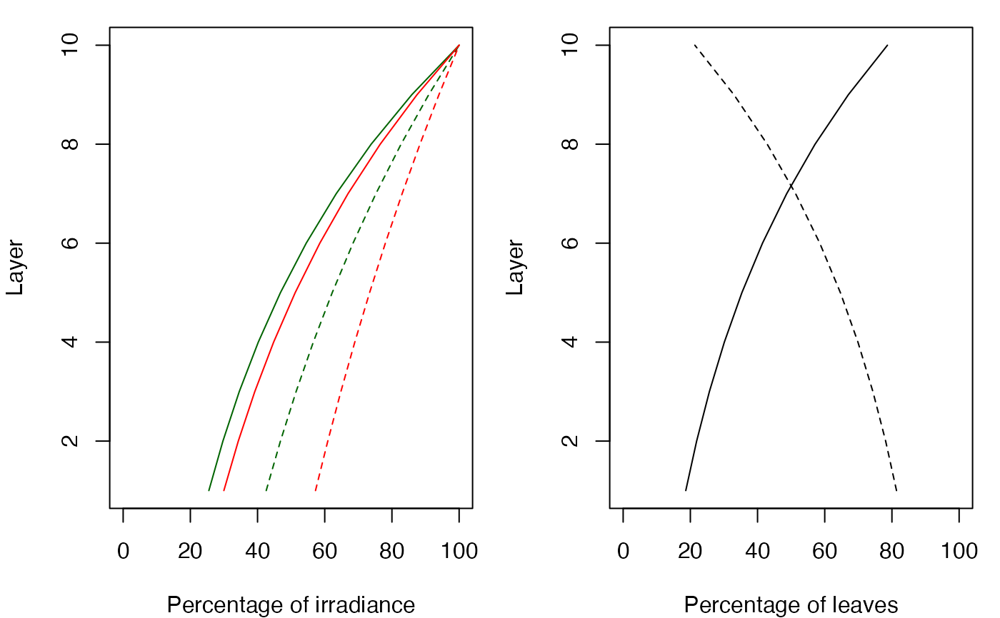
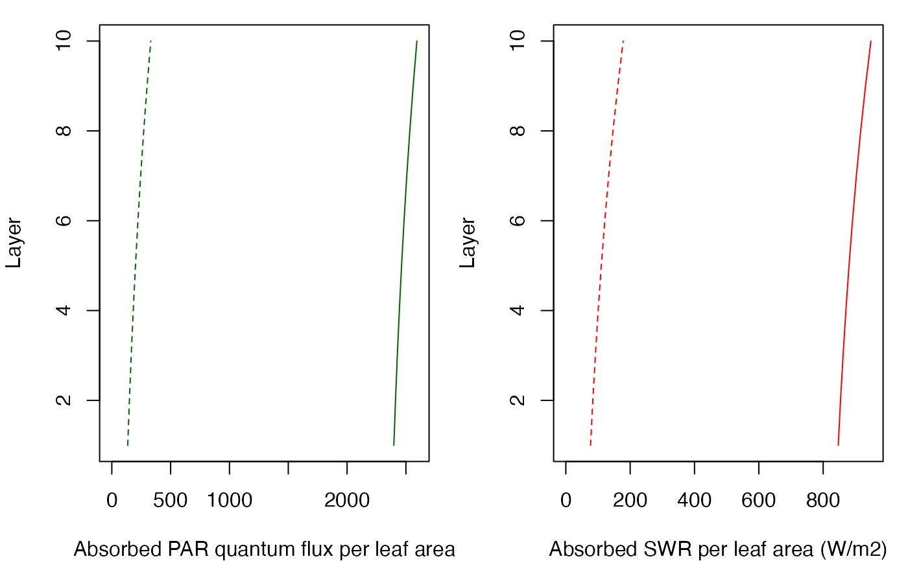

light.RdFunctions light_layerIrradianceFraction and light_layerIrradianceFractionBottomUp calculate the fraction of above-canopy irradiance (and the soil irradiance, respectively) reaching each vegetation layer. Function light_layerSunlitFraction calculates the proportion of sunlit leaves in each vegetation layer. Function light_cohortSunlitShadeAbsorbedRadiation calculates the amount of radiation absorved by cohort and vegetation layers, while differentiating between sunlit and shade leaves.
light_layerIrradianceFraction(LAIme, LAImd, LAImx, k, alpha, trunkExtinctionFraction = 0.1) light_layerIrradianceFractionBottomUp(LAIme, LAImd, LAImx, k, alpha, trunkExtinctionFraction = 0.1) light_layerSunlitFraction(LAIme, LAImd, kb) light_cohortSunlitShadeAbsorbedRadiation(Ib0, Id0, Ibf, Idf, beta, LAIme, LAImd, kb, kd, alpha, gamma) light_instantaneousLightExtinctionAbsortion(LAIme, LAImd, LAImx, kPAR, alphaSWR, gammaSWR, ddd, ntimesteps = 24, trunkExtinctionFraction = 0.1) light_longwaveRadiationSHAW(LAIme, LAImd, LAImx, LWRatm, Tsoil, Tair, trunkExtinctionFraction = 0.1) light_cohortAbsorbedSWRFraction(z, x, SpParams, gdd = NA)
| LAIme | A numeric matrix of live expanded LAI values per vegetation layer (row) and cohort (column). |
|---|---|
| LAImd | A numeric matrix of dead LAI values per vegetation layer (row) and cohort (column). |
| LAImx | A numeric matrix of maximum LAI values per vegetation layer (row) and cohort (column). |
| k | A vector of light extinction coefficients. |
| kb | A vector of direct light extinction coefficients. |
| kd | A vector of diffuse light extinction coefficients. |
| Ib0 | Above-canopy direct incident radiation. |
| Id0 | Above-canopy diffuse incident radiation. |
| Ibf | Fraction of above-canopy direct radiation reaching each vegetation layer. |
| Idf | Fraction of above-canopy diffuse radiation reaching each vegetation layer. |
| alpha | A vecfor of leaf absorbance by species. |
| beta | Solar elevation (in radians). |
| gamma | Vector of canopy reflectance values. |
| kPAR | A vector of visible light extinction coefficients for each cohort. |
| alphaSWR | A vecfor of hort-wave absorbance coefficients for each cohort. |
| gammaSWR | A vector of short-wave reflectance coefficients (albedo) for each cohort. |
| ddd | A dataframe with direct and diffuse radiation for different subdaily time steps (see function |
| ntimesteps | Number of subdaily time steps. |
| trunkExtinctionFraction | Fraction of extinction due to trunks (for winter deciduous forests). |
| LWRatm | Atmospheric downward long-wave radiation (W/m2). |
| Tsoil | Soil temperature (Celsius). |
| Tair | Canopy layer air temperature vector (Celsius). |
| x | An object of class |
| SpParams | A data frame with species parameters (see |
| z | A numeric vector with height values. |
| gdd | Growth degree days. |
Functions for short-wave radiation are adapted from Anten & Bastiaans (2016), whereas long-wave radiation balance follows Flerchinger et al. (2009). Vegetation layers are assumed to be ordered from bottom to top.
Functions light_layerIrradianceFraction, light_layerIrradianceFractionBottomUp and light_layerSunlitFraction return a numeric vector of length equal to the number of vegetation layers. Function light_cohortSunlitShadeAbsorbedRadiation returns a list with two elements (matrices): I_sunlit and I_shade.
Anten, N.P.R., Bastiaans, L., 2016. The use of canopy models to analyze light competition among plants, in: Hikosaka, K., Niinemets, U., Anten, N.P.R. (Eds.), Canopy Photosynthesis: From Basics to Application. Springer, pp. 379–398.
Flerchinger, G. N., Xiao, W., Sauer, T. J., Yu, Q. 2009. Simulation of within-canopy radiation exchange. NJAS - Wageningen Journal of Life Sciences 57 (1): 5–15. https://doi.org/10.1016/j.njas.2009.07.004.
Miquel De Cáceres Ainsa, CREAF
LAI = 2 nlayer = 10 LAIlayerlive = matrix(rep(LAI/nlayer,nlayer),nlayer,1) LAIlayerdead = matrix(0,nlayer,1) kb = 0.8 kd_PAR = 0.5 kd_SWR = kd_PAR/1.35 alpha_PAR = 0.9 gamma_PAR = 0.04 gamma_SWR = 0.05 alpha_SWR = 0.7 Ibfpar = light_layerIrradianceFraction(LAIlayerlive,LAIlayerdead,LAIlayerlive,kb, alpha_PAR) Idfpar = light_layerIrradianceFraction(LAIlayerlive,LAIlayerdead,LAIlayerlive,kd_PAR, alpha_PAR) Ibfswr = light_layerIrradianceFraction(LAIlayerlive,LAIlayerdead,LAIlayerlive,kb, alpha_SWR) Idfswr = light_layerIrradianceFraction(LAIlayerlive,LAIlayerdead,LAIlayerlive,kd_SWR, alpha_SWR) fsunlit = light_layerSunlitFraction(LAIlayerlive, LAIlayerdead, kb) SHarea = (1-fsunlit)*LAIlayerlive[,1] SLarea = fsunlit*LAIlayerlive[,1] par(mar=c(4,4,1,1), mfrow=c(1,2)) plot(Ibfpar*100, 1:nlayer,type="l", ylab="Layer", xlab="Percentage of irradiance", xlim=c(0,100), ylim=c(1,nlayer), col="dark green") lines(Idfpar*100, 1:nlayer, col="dark green", lty=2) lines(Ibfswr*100, 1:nlayer, col="red") lines(Idfswr*100, 1:nlayer, col="red", lty=2) plot(fsunlit*100, 1:nlayer,type="l", ylab="Layer", xlab="Percentage of leaves", xlim=c(0,100), ylim=c(1,nlayer))solarElevation = 0.67 SWR_direct = 1100 SWR_diffuse = 300 PAR_direct = 550 PAR_diffuse = 150 abs_PAR = light_cohortSunlitShadeAbsorbedRadiation(PAR_direct, PAR_diffuse, Ibfpar, Idfpar, beta = solarElevation, LAIlayerlive, LAIlayerdead, kb, kd_PAR, alpha_PAR, gamma_PAR) abs_SWR = light_cohortSunlitShadeAbsorbedRadiation(SWR_direct, SWR_diffuse, Ibfswr, Idfswr, beta = solarElevation, LAIlayerlive, LAIlayerdead, kb, kd_SWR, alpha_SWR, gamma_SWR) par(mar=c(4,4,1,1), mfrow=c(1,2)) absRadSL = abs_SWR$I_sunlit[,1] absRadSH = abs_SWR$I_shade[,1] lambda = 546.6507 QSL = abs_PAR$I_sunlit[,1]*lambda*0.836*0.01 QSH = abs_PAR$I_shade[,1]*lambda*0.836*0.01 plot(QSL, 1:nlayer,type="l", ylab="Layer", xlab="Absorbed PAR quantum flux per leaf area", ylim=c(1,nlayer), col="dark green", xlim=c(0,max(QSL))) lines(QSH, 1:nlayer, col="dark green", lty=2) plot(absRadSL, 1:nlayer,type="l", ylab="Layer", xlab="Absorbed SWR per leaf area (W/m2)", ylim=c(1,nlayer), col="red", xlim=c(0,max(absRadSL)))